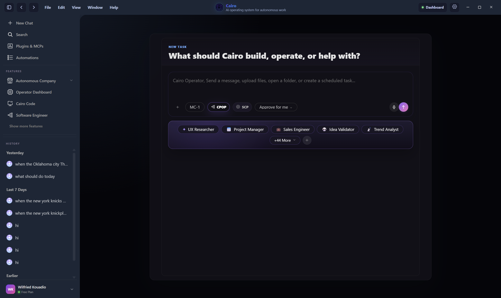
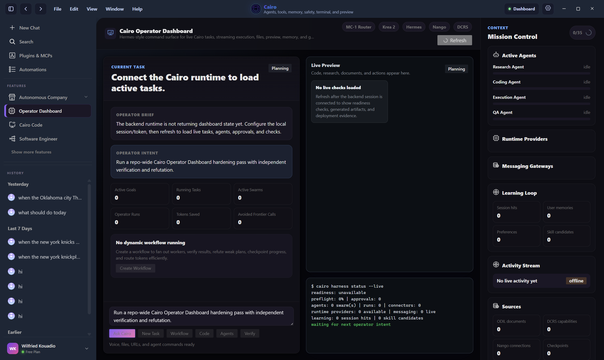
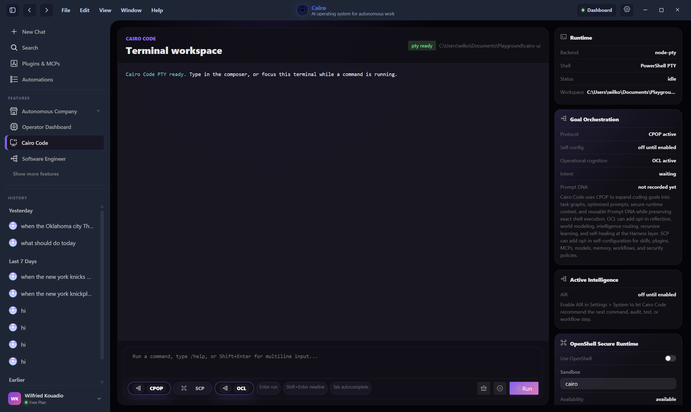
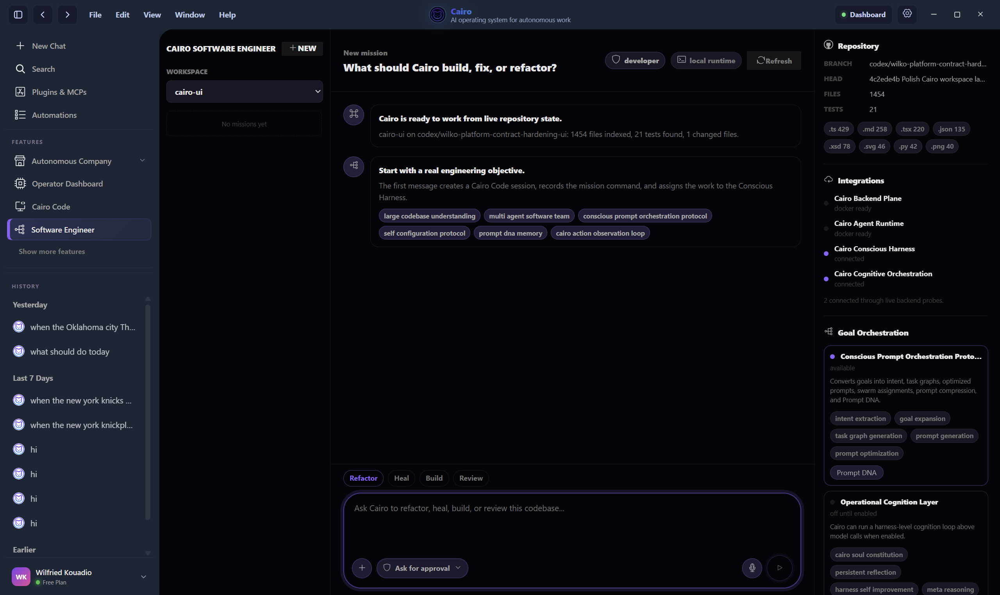

Cairo Workspace
Start with a goal, choose model routing, enable orchestration protocols, attach context, dictate instructions, and launch governed execution.
Operational Consciousness Infrastructure
The next-generation software-first agent harness for operational intelligence across goals, code, swarms, models, memory, tools, documents, autonomous companies, and governed execution.
Core innovation
Most AI tools scale intelligence by calling bigger models more often. CAIRO scales intelligence through better operational systems: software execution, memory, workflows, swarms, model routing, governance, self-healing, and continuously improving execution.
Better systems create better intelligence.
Users should not need to master prompt engineering, context engineering, model routing, tool selection, or workflow design. A user gives Cairo a goal. Cairo expands it, routes it, decomposes it, assigns agents, executes through governed tools, verifies the outcome, learns from the run, and improves the next one.
Core product
Cairo combines a goal-first workspace, operator dashboard, terminal workspace, and autonomous software engineering surface into one governed AI operating harness.

Start with a goal, choose model routing, enable orchestration protocols, attach context, dictate instructions, and launch governed execution.

Track live tasks, agents, runtime providers, previews, logs, sources, activity, memory, connectors, and operational readiness.

Use a terminal workspace with model and protocol controls, secure runtime readiness, command execution, and coding orchestration.

Run autonomous engineering workflows for large codebases: refactor, build, review, test, repair, verify, and hand off.
Build status
The current build has moved beyond architecture into concrete backend contracts and Command Center controls for launch readiness, validation, auditability, health, and smoke testing.
Runbook, evidence package, deployment preflight, manifest, release candidate gate, launch drills, validation, validation history, and audit export.
Read-only health snapshot, connector modes, scheduler state, launch validation decision, blockers, warnings, and production smoke contracts.
Nango, MarkItDown, Codex, Hermes, and ACE readiness with local, reference, configured, linked, simulated, and live-mode reporting.
Run migrations and smoke contracts against the deployed database, live credentials, real OAuth/webhook settings, and production runtime profile.
Product surface
CAIRO is designed as a clean desktop-first operating surface with terminal power and file-based configuration for advanced teams.
Command Center, Chat + Agent Workspace, Kanban, In-App Browser, Terminal, Goals, Swarms, Harnesses, Companies, Integrations, Memory, Efficiency, Security, and Settings.
A terminal-grade workspace for coding, command execution, secure runtime context, protocol controls, and developer workflows.
Cairo keeps user configuration, memory, checkpoints, sessions, plugins, security state, and logs in the installed application runtime, not in this public documentation repository.
System design
The runtime is organized around a continuous loop: observe, understand, plan, execute, verify, learn, heal, and optimize.
Command Center, agent workspace, Kanban, browser, terminal, goals, swarms, companies, integrations, memory, efficiency, security, and settings.
Intent routing, goal planning, task graphs, software execution, verification, learning, recovery, and recommendations.
Native software, local models, ColomboAI-MC-1, OpenRouter, Ollama, frontier compatibility, routing policy, compression, and token savings.
DCRS, Nango, MCP-RAG, Scraping2Tools, SiteMap2Tools, EIL, MarkItDown, workflow extraction, and memory graph writing.
CSIP, swarm regeneration, operational DNA, Engineered Memory Protocol, LHTK, checkpointing, handoffs, and sharpness preservation.
Hermes, Codex, Claude Code, OpenClaw, browser agents, custom SDK, risk engine, approval gates, audit logs, policy, and prompt firewall.
Smallest intelligence first
CAIRO uses the smallest capable execution layer before escalating. This improves cost, latency, sovereignty, reliability, and enterprise deployability.
Scheduling, permissions, notifications, state, routing, and orchestration with no model call.
Nemo 3 Nano Omni, Gemma 4, or Qwen 3.6 Local for intent classification, planning, memory ranking, workflow matching, document preprocessing, and risk pre-checks.
ColomboAI-MC-1 for advanced CAIRO reasoning, with OpenRouter and Ollama as optional routing paths.
OpenAI GPT, Anthropic Claude, Google Gemini, sovereign, or external frontier models only when the task truly requires escalation.
New core systems
MarkItDown converts PDFs, Word docs, spreadsheets, HTML, images, transcripts, and enterprise documentation into structured operational Markdown before model escalation.
DCRS discovers capabilities while Nango handles OAuth, credentials, sync, webhooks, events, and multi-tenant enterprise connectivity.
Fresh swarm generations inherit validated state and operational DNA while discarding bloated context, drift, and degraded reasoning.
CAIRO stores active, strategic, long-term, and archived operational memory as abstractions, execution graphs, summaries, and learnings.
Checkpointing, entropy monitoring, sharpness scoring, state compression, handoff, regeneration, and recovery for days-long or weeks-long work.
GitHub issues, Stripe failures, Slack escalations, Jira updates, CRM events, incidents, and security alerts can trigger governed workflows.
Platform architecture
Cairo's public repository explains the product architecture and capability layers. Production source code, private APIs, runtime scripts, deployment logic, credentials, and internal implementation details remain closed source.
Transforms goals into planning, execution, verification, healing, and optimization loops.
Expands user goals into task graphs, tracks progress, and preserves operational history.
Coordinates specialist agents, checkpoints long-horizon work, and resumes execution with memory.
Selects models, compresses context, and routes work through token-aware execution paths.
Turns documents and files into structured operational memory for agents and workflows.
Discovers capability requirements and activates governed integrations through secure connector flows.
Observes Cairo Operator, Cairo Code, Software Engineer, and Autonomous Companies as one governed system.
Manages permissions, approvals, risk posture, secure runtime state, and audit visibility.
Surfaces health, deployment evidence, runtime availability, and adapter readiness before production use.
Builds reusable memory, prompt DNA, execution DNA, and self-improvement signals from successful work.
Install and configure
Start in the browser or install Cairo Desktop for deeper local runtime access, file system workflows, local models, secure terminal execution, and software engineering tools.
Open cairo.colomboai.com, sign in, and start with a goal. No desktop installation is required.
Choose the installer for your operating system, or use the official release channel.
Install Cairo Desktop, sign in, and connect your preferred model providers, local runtimes, and optional developer tools.
Optionally configure Ollama, OpenRouter, Hugging Face, OpenAI, Anthropic, Gemini, or your managed provider gateway.
Install Visual Studio Code, Git, PowerShell, WSL 2, Docker, and OpenShell if your workflow needs software engineering runtime features.
Autonomous operations
The user gives an instruction. CAIRO executes through the safest efficient path.
CAIRO recommends improvements, opportunities, security fixes, cost reductions, and next actions.
CAIRO acts within standing goals, policy rules, budgets, confidence thresholds, and approval boundaries.
Engineering laws
Software first.
Smallest intelligence first.
Continuous optimization.
Proactive intelligence.
Self-healing operations.
Meta-harness orchestration.
Observable, controllable, auditable, safe.